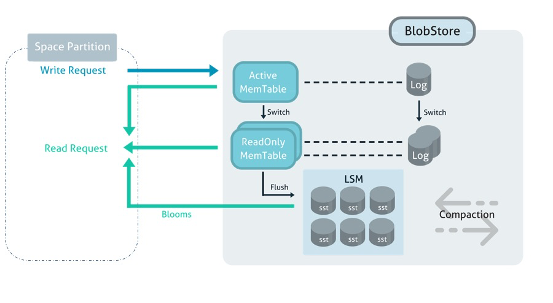
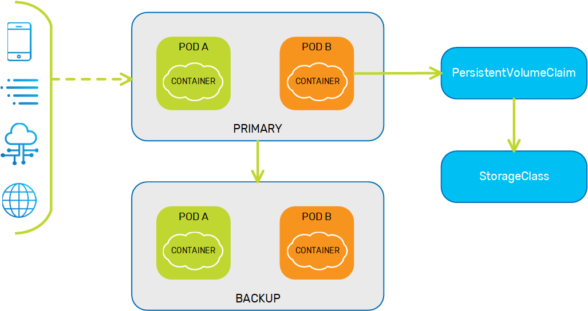
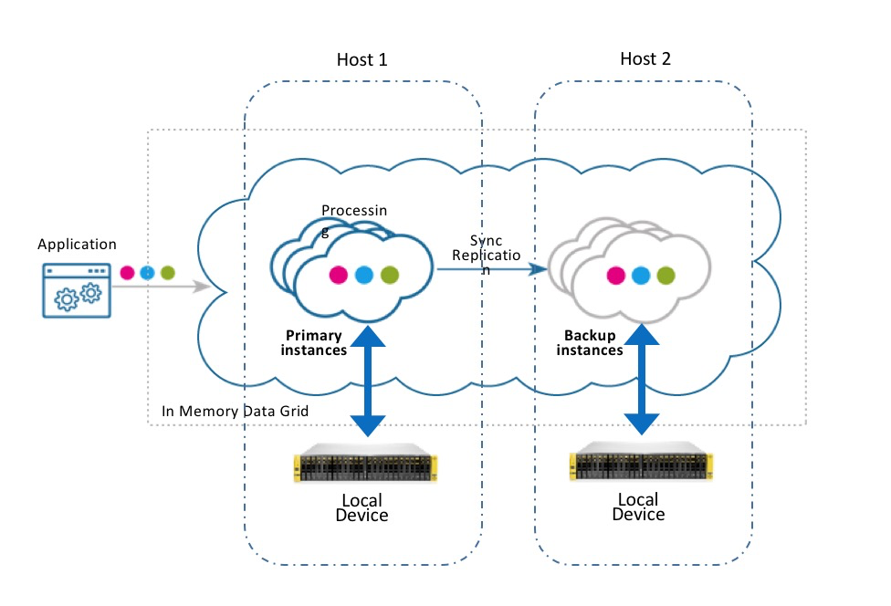
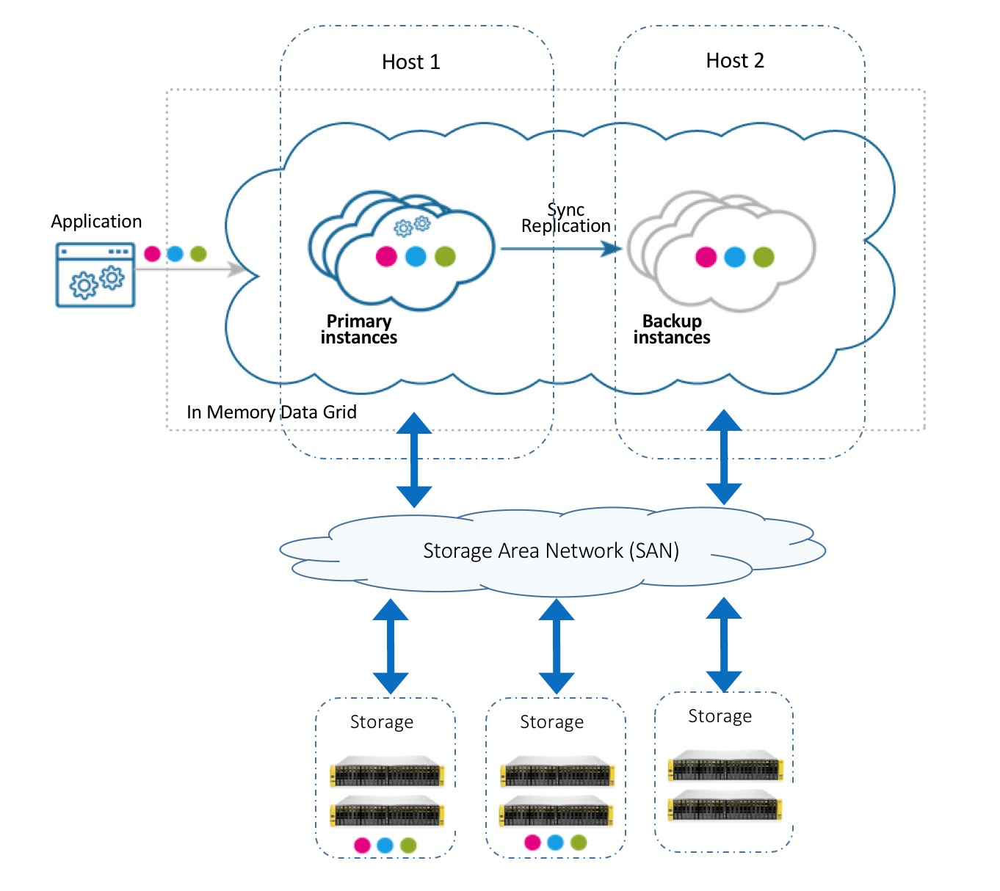
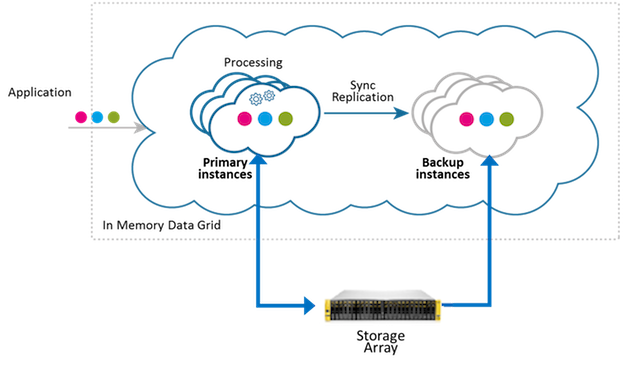
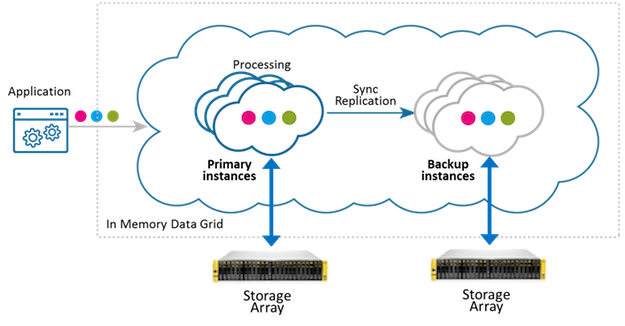

The MemoryXtend disk storage driver delivers built-in, high-speed persistence that leverages local or attached SSD devices, all-flash-arrays (AFA), or any other disk or memory option. It delivers low latency write and read performance, as well as fast data recovery. The MemoryXtend disk storage driver is based on RocksDB, which is a persistent key/value store optimized for fast storage environments.
When configured for the disk storage driver, the MemoryXtend architecture tiers the storage of each Space partition instance across two components: a Space partition instance (managed JVM heap) and an embedded key/value store (the blobstore) as shown in the diagram below.

The Space partition instance is a JVM heap that acts as an LRU cache against the underlying blobstore. This tier in the architecture stores indexes, Space class metadata, transactions, replication redo logs, leases, and statistics. Upon a Space read operation, if the object exists in the JVM heap (i.e. a cache hit) it is immediately returned to the Space proxy client. Otherwise, the Space loads it from the underlying blobstore and places it on the JVM heap (known as a cache miss).
The blobstore is based on a log-structured merge tree architecture (similar to popular NoSQL databases such as: HBase, BigTable, or Cassandra). There are four main components in the blobstore:
Any existing Space can be configured to integrate a blobstore with it. As with a typical Processing Unit, configuration is done using either the pu.xml configuration file, or in the code. For example:
<?xml version="1.0" encoding="UTF-8"?>
<beans xmlns="http://www.springframework.org/schema/beans"
xmlns:xsi="http://www.w3.org/2001/XMLSchema-instance"
xmlns:os-core="http://www.openspaces.org/schema/core"
xmlns:blob-store="http://www.openspaces.org/schema/rocksdb-blob-store"
xsi:schemaLocation="http://www.springframework.org/schema/beans http://www.springframework.org/schema/beans/spring-beans-[%=Versions.spring-short%].xsd
http://www.openspaces.org/schema/core http://www.openspaces.org/schema/[%=Versions.product-version-short%]/core/openspaces-core.xsd
http://www.openspaces.org/schema/rocksdb-blob-store http://www.openspaces.org/schema/[%=Versions.product-version-short%]/rocksdb-blob-store/openspaces-rocksdb-blobstore.xsd">
<blob-store:rocksdb-blob-store id="rocksDbBlobstore" paths="[/mnt/db1,/mnt/db2]" mapping-dir="/tmp/mapping"/>
<os-core:embedded-space id="space" space-name="mySpace" >
<os-core:blob-store-data-policy blob-store-handler="rocksDbBlobstore" persistent="true"/>
</os-core:embedded-space>
<os-core:giga-space id="gigaSpace" space="space"/>
</beans>
<?xml version="1.0" encoding="UTF-8"?>
<beans xmlns="http://www.springframework.org/schema/beans"
xmlns:xsi="http://www.w3.org/2001/XMLSchema-instance"
xmlns:os-core="http://www.openspaces.org/schema/core"
xsi:schemaLocation="http://www.springframework.org/schema/beans http://www.springframework.org/schema/beans/spring-beans.xsd
http://www.openspaces.org/schema/core http://www.openspaces.org/schema/[%=Versions.product-version-short%]/core/openspaces-core.xsd">
<bean id="rocksDbBlobstore" class="com.gigaspaces.blobstore.rocksdb.config.RocksDBBlobStoreDataPolicyFactoryBean">
<property name="paths" value="[/mnt/db1,/mnt/db2]"/>
<property name="mappingDir" value="/tmp/mapping"/>
</bean>
<os-core:embedded-space id="space" space-name="mySpace">
<os-core:blob-store-data-policy blob-store-handler="rocksDbBlobstore" persistent="true"/>
</os-core:embedded-space>
<os-core:giga-space id="gigaSpace" space="space"/>
</beans>
<?xml version="1.0" encoding="UTF-8"?>
<beans xmlns="http://www.springframework.org/schema/beans"
xmlns:xsi="http://www.w3.org/2001/XMLSchema-instance"
xmlns:os-core="http://www.openspaces.org/schema/core"xmlns:blob-store="http://www.openspaces.org/schema/rocksdb-blob-store"
xmlns:blob-store="http://www.openspaces.org/schema/rocksdb-blob-store"
xsi:schemaLocation="http://www.springframework.org/schema/beans http://www.springframework.org/schema/beans/spring-beans.xsd
http://www.openspaces.org/schema/core http://www.openspaces.org/schema/[%=Versions.product-version-short%]/core/openspaces-core.xsd
http://www.openspaces.org/schema/rocksdb-blob-store http://www.openspaces.org/schema/[%=Versions.product-version-short%]/rocksdb-blob-store/openspaces-rocksdb-blobstore.xsd">
<blob-store:rocksdb-blob-store id="rocksDbBlobstore" persistent="true"/>
<os-core:embedded-space id="space" space-name="mySpace">
<os-core:blob-store-data-policy blob-store-handler="rocksDbBlobstore"/>
</os-core:embedded-space>
<os-core:giga-space id="gigaSpace" space="space"/>
</beans>
// Create RocksDB storage driver:
BlobStoreStorageHandler blobStore = new RocksDBBlobStoreConfigurer()
.setPaths("[/mnt/db1,/mnt/db2]")
.setMappingDir("/tmp/mapping")
.create();
// Create space with that storage driver:
EmbeddedSpaceConfigurer spaceConfigurer = new EmbeddedSpaceConfigurer("mySpace")
.cachePolicy(new BlobStoreDataCachePolicy()
.setBlobStoreHandler(blobStore)
.setPersistent(true));
GigaSpace gigaSpace = new GigaSpaceConfigurer(spaceConfigurer).gigaSpace();
// Create RocksDB storage driver:
BlobStoreStorageHandler blobStore = new RocksDBBlobStoreConfigurer()
.setPersistent(true)
.create();
// Create space with that storage driver:
EmbeddedSpaceConfigurer spaceConfigurer = new EmbeddedSpaceConfigurer("mySpace")
.cachePolicy(new BlobStoreDataCachePolicy()
.setBlobStoreHandler(blobStore));
GigaSpace gigaSpace = new GigaSpaceConfigurer(spaceConfigurer).gigaSpace();
The above pu.xml example is relevant only for the service grid environment. For information on how to configure the pu.xml for a Kubernetes environment, see Persistent Volume Storage in Kubernetes below.
If you're using Kubernetes, additional configuration may be required. See Persistent Volume Storage in Kubernetes below.
The following table describes the configuration options used in rocksdb-blob-store above.
| Property | Description | Default | Use |
|---|---|---|---|
| persistent | If true, the space will load persisted data when started. Otherwise, the space will purge persisted data and start empty. | required | |
| main-path |
Specify the main path in which all necessary sub directories are created automatically (instance data and metadata). |
persistent: transient: processing unit working folder |
optional |
| paths |
A comma-separated array of mount paths used for each Space partition's blobstore. The number of paths in the array should correspond to the number of partition instances in the Space (primaries and backups). For instance, for a two-partition Space with no backups, Should not be used with main-path. The number of backups per partition is zero or one. |
|
|
| mapping-dir |
A directory in the file system that contains the "partition to blobstore" mapping file. This file is automatically generated by MemoryXtend. If a partition is relocated, the mapping file is updated. Should not be used with main-path. |
|
|
| central-storage | Specifies whether the deployment strategy is for central storage (i.e. SAN configuration) or local storage on each grid machine (default). | false | optional |
| db-options | Specifies the tuning parameters for the persistent data store in the underlying blobstore. This includes SST formats, compaction settings and flushes. See the Performance Tuning section for details. | optional | |
| data-column-family-options | Specifies the tuning parameters for the LSM logic and memory tables. See the Performance Tuning section for details. | optional |
For an example of how to configure the on-heap cache properties, see the MemoryXtend overview topic.
This topic describes the Kubernetes storage model and how it is leveraged by
Persistent Volume Storage is required for persistent MemoryXtend usage. If you're using MemoryXtend in non-persistent mode, you can skip this section.
The KubeGrid implementation of persistent volume storage utilizes the following Kubernetes entities:
storageClass - A Kubernetes wrapper around the physical storage volume that contains the storage profile. Provides the requested storage defined by the persistentVolumeClaim.persistentVolumeClaim - The request for Kubernetes to create a persistentVolume. Used to attach (bind) the persistentVolume to the Data Pod.persistentVolume - A Kubernetes wrapper around the storage that is bound to the Space. To enable persistent volume storage, the container definition must include a volumeMount, which is a path that is mapped to the external persistent storage. If a volumeMount is defined, this indicates to the pod that external storage is required. The pod definition must include a persistentVolumeClaim, which defines the capacity of the external storage volume. The pod can then create a persistentVolumeClaim when it receives the volumeMount from the container.
When a persistentVolumeClaim is created, it communicates to the storageClass that external storage is needed. The storageClass dynamically creates a persistentVolume, which is then attached to the persistentVolumeClaim and its associated pod.
To summarize, the pod creates a persistentVolumeClaim, which interfaces with the storageClass to create a persistentVolume dedicated to that pod.

In order to deploy a Processing Unit with tiered storage in Kubernetes, both the pu.xml and pu Helm charts must be configured with the MemoryXtend definitions.
In order to deploy a Processing Unit with tiered storage in Kubernetes, the pu Helm chart must be configured with the MemoryXtend definitions.
The pu.xml contains a paths property. This property defines the mount path for the persistent external storage, or blobstore, used by MemoryXtend.
When using a paths array.
<bean id="propertiesConfigurer" class="org.springframework.beans.factory.config.PropertyPlaceholderConfigurer">
<property name="properties">
<props>
<prop key="space-name">rocksdb</prop>
<prop key="mx-path">opt/gigaspaces/memoryxtend</prop>
</props>
</property>
</bean>
<blob-store:rocksdb-blob-store id="myBlobStore" paths="[${mx-path}]" mapping-dir="${mx-path}/mapping/rocksdbmap"/>
<os-core:embedded-space id="space" name="${space-name}">
<os-core:blob-store-data-policy blob-store-handler="myBlobStore" persistent="true"/>
</os-core:embedded-space>
helm install command to deploy the Processing Unit. The minimum configuration required for MemoryXtend volume is to set the enabled property to true, and the storage property to the required capacity of the external storage. For example:
helm install insightedge-pu --name my-pu --set memoryXtendVolume.enabled=true,memoryXtendVolume.volumeClaimTemplate.storage=10Gi,resourceUrl=http://<my-server>/path/to/my-pu.jar
helm install my-pu insightedge-pu --set memoryXtendVolume.enabled=true,memoryXtendVolume.volumeClaimTemplate.storage=10Gi,resourceUrl=http://<my-server>/path/to/my-pu.jarhelm install insightedge-pu --name my-pu --set memoryXtendVolume.enabled=true,memoryXtendVolume.volumeClaimTemplate.storage=10Gi,resourceUrl=http://<my-server>/path/to/my-pu.jarTwo methods are available to deploy the data pod: using Kubernetes Operator (preferred method), and using Helm charts (deprecated method).
Follow the procedure described in
Fetch the helm install command to deploy the Processing Unit. The minimum configuration required for MemoryXtend volume is to set the enabled property to true, and the storage property to the required capacity of the external storage. For example:
helm install insightedge-pu --name my-pu --set memoryXtendVolume.enabled=true,memoryXtendVolume.volumeClaimTemplate.storage=10Gi,resourceUrl=http://<my-server>/path/to/my-pu.jar
helm install my-pu insightedge-pu --set memoryXtendVolume.enabled=true,memoryXtendVolume.volumeClaimTemplate.storage=10Gi,resourceUrl=http://<my-server>/path/to/my-pu.jarhelm install insightedge-pu --name my-pu --set memoryXtendVolume.enabled=true,memoryXtendVolume.volumeClaimTemplate.storage=10Gi,resourceUrl=http://<my-server>/path/to/my-pu.jarThe following table describes the properties in the memoryXtendVolume section of the Helm chart.
| Property | Description | Default Value | Required |
|---|---|---|---|
memoryXtendVolume.enabled
|
Indicates whether MemoryXtend for persistent memory is enabled. | false | Yes |
memoryXtendVolume.volumeMount.name
|
Name of the volumeMount. |
mx-volume | No |
memoryXtendVolume.volumeMount.mountPath
|
Path that is mapped to the external persistent storage (must be identical to the volumeMount path in the Data Pod configuration). |
/opt/gigaspaces/memoryxtend/opt/gigaspaces/work/memoryxtend
|
No |
memoryXtendVolume.volumeClaimTemplate.storage
|
Capacity of the external persistent memory volume. | Yes | |
memoryXtendVolume.volumeClaimTemplate.storageClassName
|
The storageClass from which the Data Pod is requesting the external persistent memory volume. |
No | |
memoryXtendVolume.volumeClaimTemplate.accessModes
|
Mode of access to the external persistent memory volume | ReadWriteOnce | No |
memoryXtendVolume.volumeClaimTemplate.persistentVolumeReclaimPolicy
|
Define what to do with the persistentVolume after the persistentVolumeClaim is deleted. |
Delete | No |
The data grid can cache the values of indexed fields in the process native (off-heap) memory. This optimizes operations that require only indexed values in order to execute, by fetching the data from off-heap instead of disk. The operations that benefit from this optimization are:
This feature increases the overall memory consumption of the Space by several bytes (depending on the indexed fields) per entry.
The off-heap cache is disabled by default. To enable it, simply set the off-heap-cache-memory-threshold property in rocksdb-blob-store to the amount of memory you want to allocate for off-heap caching, for example 20m. Use the following sizing units:
b - Bytesk, kb - Kilobytesm, mb - Megabytesg, gb - GigabytesBefore any operation that requires memory allocation (write, update, and initial load), the memory manager checks how much of the allocated memory has been used. If the threshold has been breached, an OffHeapMemoryShortageException is thrown. Read, take, and clear operations are always allowed.
If the used memory is below the configured threshold, then a large write operation may exceed the threshold without being blocked or throwing an exception. Users should take this into account when setting the maximum memory size. This behavior is similar to that of the regular memory manager.
The amount of used off-heap memory can be tracked using the following:
space_blobstore_off-heap-cache_used-bytes_total metric, as described on the Metrics page.When a Processing Unit is undeployed or a Space is killed, the off-heap memory manager frees the allocated off-heap memory.
See the following example:
public static class TestSpaceClass {
private Integer id;
private Integer age;
private Boolean active;
public TestSpaceClass() {
}
@SpaceId
public Integer getId() {
return id;
}
public void setId(Integer id) {
this.id = id;
}
@SpaceIndex
public Integer getAge() {
return age;
}
public void setAge(Integer age) {
this.age = age;
}
public Boolean getActive() {
return active;
}
public void setActive(Boolean active) {
this.active = active;
}
}
gigaSpace.readMultiple(new SQLQuery<TestSpaceClass>(TestSpaceClass.class, "age = 3").setProjections("id", "age"));
To see whether your query can benefit from this optimization behavior, you can set com.gigaspaces.cache to FINE and look for the following log entry:
2017-11-28 07:57:49,115 FINE [com.gigaspaces.cache] - BlobStore - enabled optimization for query: SELECT * FROM com.gigaspaces.test.blobstore.rocksdb.AbstractRocksDBOptimizationTest$TestSpaceClass
2017-11-28 07:57:49,115 FINE [com.gigaspaces.cache] - BlobStore - disabled optimization for query: SELECT * FROM com.gigaspaces.test.blobstore.rocksdb.AbstractRocksDBOptimizationTest$TestSpaceClass
When set to FINER, you can see where the entries were fetched from. Look for the following log entry:
2017-11-28 07:57:49,117 FINER [com.gigaspaces.cache] - container [mySpace_container1_1:mySpace] Blobstore- entry loaded from off heap, uid=-1850388785^84^98^0^0
2017-11-28 07:57:49,117 FINER [com.gigaspaces.cache] - container [mySpace_container1_1:mySpace] Blobstore- entry loaded from disk, uid=-1850388785^84^98^0^0
As part of fine-tuning the MemoryXtend functionality, you can control the balance between memory utilization and system performance. This is useful because there are two ways to update the value of an object in the off-heap memory:
Deleting and reallocating memory takes longer then overwriting the same memory area, but if the size of the new value is smaller then the old value, then the overwrite option leaves part of the original allocated memory underutilized. You can use the BLOBSTORE_OFF_HEAP_MIN_DIFF_TO_ALLOCATE_PROP Space property to control when to trade off system performance for maximizing the memory usage.
This Space property works as follows: if the oldValueSize - newValueSize > blobstore.off-heap.update_threshold, then delete and reallocate memory for the object. Otherwise overwrite the old object value with the new object value.
The default threshold is 50B.
<?xml version="1.0" encoding="UTF-8"?>
<beans xmlns="http://www.springframework.org/schema/beans"
xmlns:xsi="http://www.w3.org/2001/XMLSchema-instance"
xmlns:os-core="http://www.openspaces.org/schema/core"
xmlns:blob-store="http://www.openspaces.org/schema/off-heap-blob-store"
xsi:schemaLocation="http://www.springframework.org/schema/beans http://www.springframework.org/schema/beans/spring-beans-[%=Versions.spring-short%].xsd
http://www.openspaces.org/schema/core http://www.openspaces.org/schema/[%=Versions.product-version-short%]/core/openspaces-core.xsd
http://www.openspaces.org/schema/off-heap-blob-store http://www.openspaces.org/schema/[%=Versions.product-version-short%]/off-heap-blob-store/openspaces-off-heap-blob-store.xsd">
<blob-store:off-heap-blob-store id="offheapBlobstore" memory-threshold="20g"/>
<os-core:embedded-space id="space" name="mySpace">
<os-core:blob-store-data-policy persistent="false" blob-store-handler="offheapBlobstore"/>
<os-core:properties>
<props>
<prop key="blobstore.off-heap.update_threshold">1M</prop>
</props>
</os-core:embedded-space>
<os-core:giga-space id="gigaSpace" space="space"/>
</beans>
<?xml version="1.0" encoding="UTF-8"?>
<beans xmlns="http://www.springframework.org/schema/beans"
xmlns:xsi="http://www.w3.org/2001/XMLSchema-instance"
xmlns:os-core="http://www.openspaces.org/schema/core"
xmlns:blob-store="http://www.openspaces.org/schema/off-heap-blob-store"
xsi:schemaLocation="http://www.springframework.org/schema/beans http://www.springframework.org/schema/beans/spring-beans.xsd
http://www.openspaces.org/schema/core http://www.openspaces.org/schema/[%=Versions.product-version-short%]/core/openspaces-core.xsd
http://www.openspaces.org/schema/off-heap-blob-store http://www.openspaces.org/schema/[%=Versions.product-version-short%]/off-heap-blob-store/openspaces-off-heap-blob-store.xsd">
<blob-store:off-heap-blob-store id="offheapBlobstore" memory-threshold="20g"/>
<os-core:embedded-space id="space" name="mySpace">
<os-core:blob-store-data-policy persistent="false" blob-store-handler="offheapBlobstore"/>
<os-core:properties>
<props>
<prop key="blobstore.off-heap.update_threshold">1M</prop>
</props>
</os-core:embedded-space>
<os-core:giga-space id="gigaSpace" space="space"/>
</beans>
// Create off-heap storage driver:
String memoryThreshold = "5g";
BlobStoreStorageHandler blobStore = new OffHeapBlobStoreConfigurer()
.setMemoryThreshold(memoryThreshold)
.create();
// Create space with that storage driver:
String spaceName = "mySpace";
EmbeddedSpaceConfigurer spaceConfigurer = new EmbeddedSpaceConfigurer(spaceName)
.cachePolicy(new BlobStoreDataCachePolicy()
.setBlobStoreHandler(blobStore)
.setPersistent(false));
spaceConfigurer.addProperty("blobstore.off-heap.update_threshold", "1M");
GigaSpace gigaSpace = new GigaSpaceConfigurer(spaceConfigurer).gigaSpace();
This configuration allows each Space partition instance (primary or backup) to use a machine-local storage device (SSD/HDD). With this approach, data locality is leveraged so that the devices local to the machine are used for reads/writes. The local storage deployment strategy provides an easy way to implement a "local persistent store" (also known as native persistence) pattern.

This deployment strategy works well with storage area networks (SAN), which means that the disk drive devices are installed in a remote storage array but behave as if they're attached to the local machine. Most storage networks use the iSCSI or Fibre Channel protocol for communication between servers and disk drive devices. This configuration breaks the coupling between a partition instance and a local machine device, allowing seamless relocation of partitions across data grid machines.

Tiering storage between Space partition instances and attached storage can be applied across one or more storage arrays, as shown in the configurations below:
|
The following example deployes a 2-partition Space with a single backup (2,1) in the following manner:
|
 |
<blob-store:rocksdb-blob-store id="myBlobStore" paths="[/mnt/db1,/mnt/db2,/mnt/db3,/mnt/db4]"/>
|
The following example deploys a 2-partition Space with a single backup (2,1) in the following manner:
|
 |
<blob-store:rocksdb-blob-store id="myBlobStore" paths="[/mnt1/db1,/mnt1/db2],[/mnt2/db1,/mnt2/db2]"/>
The data grid uses the default DBOptions class com.com.gigaspaces.blobstore.rocksdb.config.XAPDBOptions.
A list of configuration properties can be found in the org.rocksdb.DBOptionsInterface API documentation.
| Property | Description | Value |
|---|---|---|
| createIfMissing | Configure whether to create the database if it is missing. This value is always overrode with true. |
true |
| maxBackgroundCompactions | Specifies the maximum number of concurrent background compaction jobs, submitted to the default LOW priority thread pool. If you're increasing this, also consider increasing the number of threads in the LOW priority thread pool |
8 |
| maxBackgroundFlushes | Specifies the maximum number of concurrent background flush jobs. If you're increasing this, also consider increasing the number of threads in the HIGH priority thread pool. |
8 |
| maxOpenFiles | Number of open files that can be used by the database. You may need to increase this if your database has a large working set. When the value is set to -1, files that are opened are always kept open. | -1 |
| tableFormatConfig | Set the configuration for the table format. The default is BlockBasedTableConfig with
rocksdb-blob-store namespace / RocksDBBlobStoreConfigurer if provided, otherwise the following defaults are used:
|
Below are the values for the default class com.com.gigaspaces.blobstore.rocksdb.config.XAPColumnFamilyOptions.
A list of configuration properties can be found in the org.rocksdb.ColumnFamilyOptionsInterface API documentation.
<?xml version="1.0" encoding="UTF-8"?>
<beans xmlns="http://www.springframework.org/schema/beans"
xmlns:xsi="http://www.w3.org/2001/XMLSchema-instance"
xmlns:os-core="http://www.openspaces.org/schema/core"
xmlns:blob-store="http://www.openspaces.org/schema/rocksdb-blob-store"
xsi:schemaLocation="http://www.springframework.org/schema/beans http://www.springframework.org/schema/beans/spring-beans-[%=Versions.spring-short%].xsd
http://www.openspaces.org/schema/core http://www.openspaces.org/schema/[%=Versions.product-version-short%]/core/openspaces-core.xsd
http://www.openspaces.org/schema/rocksdb-blob-store http://www.openspaces.org/schema/[%=Versions.product-version-short%]/rocksdb-blob-store/openspaces-rocksdb-blobstore.xsd">
<bean id="dbOptions" class="com.gigaspaces.blobstore.rocksdb.config.XAPDBOptions">
<!-- This will override the default of 8 -->
<property name="maxBackgroundCompactions" value="4" />
<property name="maxBackgroundFlushes" value="4" />
</bean>
<bean id="dataColumnFamilyOptions" class="com.gigaspaces.blobstore.rocksdb.config.XAPColumnFamilyOptions">
<property name="maxBytesForLevelMultiplier" value="20"/>
</bean>
<blob-store:rocksdb-blob-store id="myBlobStore" fsync="false"
cache-size-mb="100" block-size-kb="16"
db-options="dbOptions" data-column-family-options="dataColumnFamilyOptions"
paths="[/tmp/rocksdb,/tmp/rocksdb2]" mapping-dir="/tmp/mapping"/>
<os-core:embedded-space id="space" space-name="mySpace" >
<os-core:blob-store-data-policy blob-store-handler="myBlobStore"/>
</os-core:embedded-space>
<os-core:giga-space id="gigaSpace" space="space"/>
</beans>
<?xml version="1.0" encoding="UTF-8"?>
<beans xmlns="http://www.springframework.org/schema/beans"
xmlns:xsi="http://www.w3.org/2001/XMLSchema-instance"
xmlns:os-core="http://www.openspaces.org/schema/core"
xmlns:blob-store="http://www.openspaces.org/schema/rocksdb-blob-store"
xsi:schemaLocation="http://www.springframework.org/schema/beans http://www.springframework.org/schema/beans/spring-beans.xsd
http://www.openspaces.org/schema/core http://www.openspaces.org/schema/[%=Versions.product-version-short%]/core/openspaces-core.xsd
http://www.openspaces.org/schema/rocksdb-blob-store http://www.openspaces.org/schema/[%=Versions.product-version-short%]/rocksdb-blob-store/openspaces-rocksdb-blobstore.xsd">
<bean id="dbOptions" class="com.gigaspaces.blobstore.rocksdb.config.XAPDBOptions">
<!-- This will override the default of 8 -->
<property name="maxBackgroundCompactions" value="4" />
<property name="maxBackgroundFlushes" value="4" />
</bean>
<bean id="dataColumnFamilyOptions" class="com.gigaspaces.blobstore.rocksdb.config.XAPColumnFamilyOptions">
<property name="maxBytesForLevelMultiplier" value="20"/>
</bean>
<blob-store:rocksdb-blob-store id="myBlobStore" fsync="false"
cache-size-mb="100" block-size-kb="16"
db-options="dbOptions" data-column-family-options="dataColumnFamilyOptions"
paths="[/tmp/rocksdb,/tmp/rocksdb2]" mapping-dir="/tmp/mapping"/>
<os-core:embedded-space id="space" space-name="mySpace" >
<os-core:blob-store-data-policy blob-store-handler="myBlobStore"/>
</os-core:embedded-space>
<os-core:giga-space id="gigaSpace" space="space"/>
</beans>
RocksDBBlobStoreConfigurer configurer = new RocksDBBlobStoreConfigurer()
.setPaths("[/tmp/rocksdb,/tmp/rocksdb2]")
.setMappingDir("/tmp/mapping")
.setCacheSizeMB(100)
.setBlockSizeKB(16)
.setFsync(false);
XAPDBOptions dbOptions = new XAPDBOptions();
configurer.setDBOptions(dbOptions); // optional
XAPColumnFamilyOptions dataColumnFamilyOptions = new XAPColumnFamilyOptions();
configurer.setDataColumnFamilyOptions(dataColumnFamilyOptions); // optional
RocksDBBlobStoreHandler rocksDBBlobStoreHandler = configurer.create();
BlobStoreDataCachePolicy cachePolicy = new BlobStoreDataCachePolicy();
cachePolicy.setBlobStoreHandler(rocksDBBlobStoreHandler);
EmbeddedSpaceConfigurer embeddedSpaceConfigurer = new EmbeddedSpaceConfigurer("mySpace");
embeddedSpaceConfigurer.cachePolicy(cachePolicy);
gigaSpace = new GigaSpaceConfigurer(embeddedSpaceConfigurer.space()).gigaSpace();